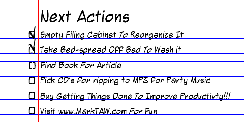

Cascading Next Actions (Getting Things Done)
Explaining the idea of Next Actions to my girlfriend, I thought of something that could help make Next Actions even more helpful.
First of all, what are Next Actions? What is GTD?
Next Actions are a concept from Getting Things Done, which is perhaps the finest book on personal productivity ever written.
Basically, the Next Actions concept says that if you have an abstract item on your to-do list (replace tires on car), you'll never do it because every time you look at it, you'll glaze the in-between steps. But you do have to think about what to do in order to do it. So why not think about it now? By thinking about it now and writing it down as a Next Action (the Next Action I can take to bring this project to completion), I can do that Next Action automatically the next time I see it instead of glazing over some nebulous far-in-the-future to-do. (Call tire shop for prices.)
With a to-do list you have to make a decision on the next action for each item each time you look at it. With a Next Actions list, you have that decision made and you just have to choose which Next Action to do now.
When I was in high school, my English teacher (among other teachers) told me that I should take my term paper and break it up into smaller steps. That worked in theory, but I never did it that way. Breaking it up into smaller steps is still work, and it's still a big project, even if it is in smaller steps. It's just as intimidating.
But by focusing on only the next action rather than all the actions, it's not nearly as intimidating. You don't need a complete roadmap. The journey of a thousand miles begins with a single step and you only need to know what the very next one is.
If I had to choose between the big black box, the big black box divided into 100 pieces, or the single little gray bod, I'd choose the single little gray box every time.
Now what do you mean by Cascading Next Actions?
Maybe it's my girlfriend's unfamiliarity with GTD, but she's afraid that if she doesn't write down why she's doing something, once she finishes the Next Action she'll lose track of what's supposed to happen next. It's easy to get distracted when something is done and check it off mindlessly without thinking about why you did it in the first place.
Even David Allen doesn't handle this well because he has a separate category for Projects, which serve as stakeholders for a series of Next Actions. You need to review two lists (Next Actions and Projects) in order to make sure everything that needs to be done is getting done.
Well, why not use Cascading Next Actions to keep track of both in one place? The concept is really simple. You just add a "To" or "For" to your next actions and write down the reason that step is important - what the ultimate goal is.

By writing down why you're doing something, you're sure that when you're checking it off, you're re-reviewing the end-goal and thinking about the next Next Action. My girlfriend says this feels backwards because usually you write down the major thing first and then bullet point subtasks under it, but here you're writing down the smaller task first, and the reason why after. Still, she feels more comfortable knowing that she's keeping track of the big picture and the little things all in one place.
GTD veterans may think this is a bit of fluff, but for others just getting started it resembles a traditional task list (even if it is backwards) so you can make the transition easier. Plus, even for veterans it's a great way of keeping track of your projects and tasks in one place. I much prefer having one list to two, and I don't mind mixing in projects and next actions on the same list. Anything that needs to be kept track of, even if there's nothing I can do about it now can go on this list.
This great for small scale projects where you don't have a complete filing system & calendar handy, or aren't likely to review these things regularly. Everything is in one place, out of your mind and on paper, and that's really the essence of GTD.
By doing this, when I complete one item, I'm much more likely to write down (or do) the next connected item in the sequence.
Getting Things Done is my bible for personal productivity, and I'm teaching it to my girlfriend who was just promoted to Manager. If you're one of the few people in the world that doesn't know about GTD, you really need to read this book. It lives up to its subtitle: The Art of Stress-Free Productivity.
The PigPog Method is a similar idea, and definately worth checking out.
page first created on Saturday, January 22, 2005
Want more? Discuss this article in the forum.